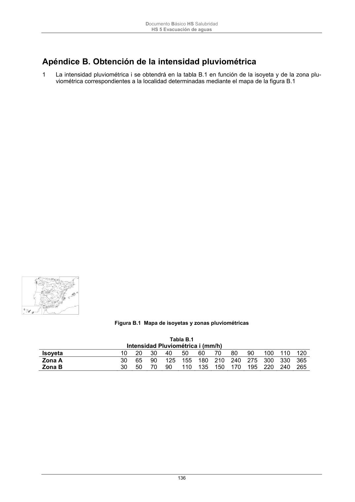

DB-HS · Página 136 · versión 2022-06-14
SHA256: 68df3caacc95f71aee2ec1ba7b2c65ae66155c21e3a8785521b8fdd4fd640d3b · página física 136 de 184 · métodos de encabezado
solo si están cotejados.
Documento · ← p. 135 · p. 137 →
Formatos: Markdown · JSON de bloques · PDF p. 136 · imagen PNG
Documento Básico HS Salubridad HS 5 Evacuación de aguas 136 Apéndice B. Obtención de la intensidad pluviométrica 1 La intensidad pluviométrica i se obtendrá en la tabla B.1 en función de la isoyeta y de la zona plu- viométrica correspondientes a la localidad determinadas mediante el mapa de la figura B.1 Figura B.1 Mapa de isoyetas y zonas pluviométricas Tabla B.1 Intensidad Pluviométrica i (mm/h) Isoyeta 10 20 30 40 50 60 70 80 90 100 110 120 Zona A 30 65 90 125 155 180 210 240 275 300 330 365 Zona B 30 50 70 90 110 135 150 170 195 220 240 265
